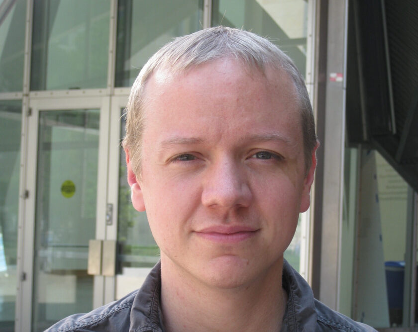
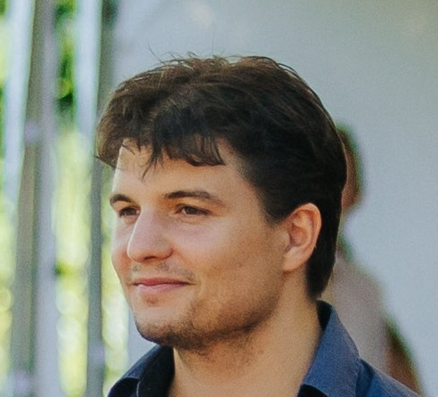

Slides/Posters
Talks
Invited Talks
Simplicity Within Biological Complexity
Slides: TBC
Smarter and Sparser AI with Complex Network Science
Slides: TBC
The Cost of Sharing: From Topological Multitasking Limits to Semantic Horizons

Representation Learning and Physics
Compositional Sparsity
Slides: TBC
Contributed Talks
From Graphons to Graphlets: A Graph-Limit Lens on Sparse Neural Connectivity and Training
Slides: TBC
Emergence of giant component in percolated artificial neural networks
Slides: TBC

Robustness in sparse artificial neural networks trained with adaptive topology
Task complexity shapes internal representations and robustness in neural networks
🏆 Best Contributed Talk Award
Posters
A Brain network science modelling of sparse neural networks enables Transformers and LLMs to perform as fully connected
Adaptive Cannistraci Hebb Network Automata Modelling of Complex Networks for Path based Link Prediction
Preview
TBC
TBC
Emergence of giant component in percolated artificial neural networks
Fréchet Regression on the Bures-Wasserstein Manifold
Heavy-tailed update distributions arise from information-driven self-organization in nonequilibrium learning
Latent Geometry-Driven Network Automata for Complex Network Dismantling
Robustness in sparse artificial neural networks trained with adaptive topology
Spark: Modular Spiking Neural Networks
Task complexity shapes internal representations and robustness in neural networks